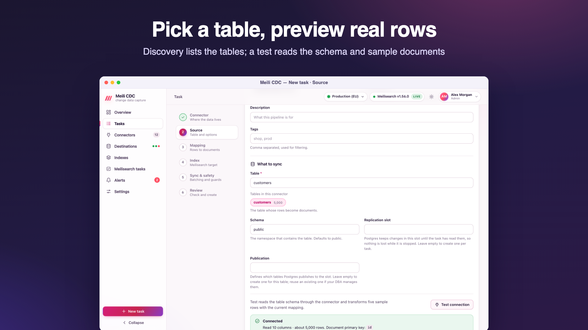

Quick start
Download one binary, start it, create the admin account in the browser and follow the onboarding flow: a Meilisearch destination, a connector, then your first sync task.
Just want to see it run?
The Docker Compose demo starts Meilisearch, PostgreSQL with 10,000 products and a running sync in one command.
Before you start
- A reachable Meilisearch instance and an API key that can write documents and manage indexes (the master key or an admin key works; see API key permissions).
- A source prepared for change data capture. For PostgreSQL that means
wal_level=logical; every source page lists its prerequisites, for example PostgreSQL or MySQL.
1. Download
Every GitHub release ships one archive per platform plus a checksums.txt file. Archive names follow meilisearch-cdc_<version>_<os>_<arch>, where the version has no leading v:
| Platform | Archive |
|---|---|
| Linux x86-64 | meilisearch-cdc_<version>_linux_amd64.tar.gz |
| Linux ARM64 | meilisearch-cdc_<version>_linux_arm64.tar.gz |
| macOS Intel | meilisearch-cdc_<version>_darwin_amd64.tar.gz |
| macOS Apple silicon | meilisearch-cdc_<version>_darwin_arm64.tar.gz |
| Windows x86-64 | meilisearch-cdc_<version>_windows_amd64.zip |
| Windows ARM64 | meilisearch-cdc_<version>_windows_arm64.zip |
Each archive contains a folder of the same name with the meilisearch-cdc binary (meilisearch-cdc.exe on Windows), README.md and docs/api.md and docs/cli.md. The binaries are static (built without cgo) and need nothing else.
# Linux or macOS: pick the version and platform you need.
VERSION=1.2.3 # the release tag without the leading "v"
OS=linux ARCH=amd64 # darwin / arm64 on Apple silicon
NAME=meilisearch-cdc_${VERSION}_${OS}_${ARCH}
curl -LO https://github.com/ja7ad/meilisearch-cdc/releases/download/v${VERSION}/${NAME}.tar.gz
curl -LO https://github.com/ja7ad/meilisearch-cdc/releases/download/v${VERSION}/checksums.txtVerify the checksum
checksums.txt holds the SHA-256 of every archive, in the format of sha256sum.
# Linux: prints "<archive>: OK"
grep " ${NAME}.tar.gz\$" checksums.txt | sha256sum --check
# macOS
grep " ${NAME}.tar.gz\$" checksums.txt | shasum -a 256 --check# Windows PowerShell
$name = "meilisearch-cdc_1.2.3_windows_amd64.zip"
$expected = (Select-String -Path checksums.txt -Pattern $name).Line.Split(" ")[0]
$actual = (Get-FileHash $name -Algorithm SHA256).Hash.ToLower()
if ($actual -eq $expected) { "OK" } else { "MISMATCH" }Then unpack it:
tar -xzf ${NAME}.tar.gz
cd ${NAME}
./meilisearch-cdc versionExpand-Archive meilisearch-cdc_1.2.3_windows_amd64.zip -DestinationPath .
.\meilisearch-cdc_1.2.3_windows_amd64\meilisearch-cdc.exe versionmeilisearch-cdc version prints the release tag it was built from (a build from source prints dev).
2. Start it
No configuration is required. Without flags the service listens on :8080 and keeps its state in ./data:
./meilisearch-cdc
# or choose the address and the data directory:
./meilisearch-cdc -listen 127.0.0.1:8080 -data-dir /var/lib/meilisearch-cdcOn the first start the service creates the data directory (mode 0700), the state database cdc.db and a random encryption key in secret.key (mode 0600). Until an account exists it logs:
level=WARN msg="no user exists yet: open the dashboard to create the first admin (or set CDC_ADMIN_EMAIL and CDC_ADMIN_PASSWORD)"
level=INFO msg=listening addr=:8080 meilisearch=""Back up secret.key with the data
Connector passwords and Meilisearch API keys are encrypted with this key. Losing it means re-entering every credential. See Backups and upgrades.
3. Create the admin account
Open http://localhost:8080. While no account exists, the dashboard shows the setup page: enter an email, a name and a password of 8 to 128 characters. This first account is an admin and the primary administrator of the installation.
To skip the setup page (for automated deployments), set CDC_ADMIN_EMAIL and CDC_ADMIN_PASSWORD (or CDC_ADMIN_PASSWORD_FILE) before the first start: the account is created when no user exists yet.
4. Follow the onboarding flow
After the first sign-in the dashboard opens an onboarding flow with three steps. Each step can be skipped and done later from the menu.
- Add a destination. Name your Meilisearch instance, enter its URL (for example
http://localhost:7700) and API key, and test the connection. The first destination becomes the default one. Details: Destinations. - Add a connector. Choose the source type, enter the connection string and test it: the test reports the server version and the tables it can see. Details: Connectors.
- Create the first task. The wizard asks for the table, the mapping, the index and the sync options. Test connection shows the columns and five transformed sample documents before you save. Details: Create a task.

Start the task. It moves through starting and snapshotting (with a progress bar) to streaming. Change a row in the source and watch the document change in the index's search tab a moment later.
Docker one-liner
Images are published to the GitHub Container Registry for linux/amd64 and linux/arm64:
docker run -d --name cdc -p 8080:8080 -v cdc-data:/data ghcr.io/ja7ad/meilisearch-cdc:latestThe image stores its state in the /data volume and runs as a non-root user. See Docker and Compose for tags, environment variables and secrets.
Docker Compose demo
The repository's deploy/docker-compose.yml starts Meilisearch, PostgreSQL 17 (with wal_level=logical and 10,000 seeded products) and meilisearch-cdc built from the source tree, with a declarative task already running:
git clone https://github.com/ja7ad/meilisearch-cdc.git
cd meilisearch-cdc
docker compose -f deploy/docker-compose.yml up --buildOpen http://localhost:8080 and sign in as admin@example.com with the password change-me-please. Meilisearch listens on http://localhost:7700 with the master key masterKey. The demo pins the service to that Meilisearch with MEILI_URL (single-instance mode) and applies deploy/tasks.yaml at startup (declarative tasks).
Demo values only
The demo's passwords and keys are public. Do not reuse that file for a real deployment.
Next steps
- Install it as a service with a dedicated user and data directory.
- Put it behind TLS before exposing the dashboard.
- Invite your team with the right roles, and set up alerts.